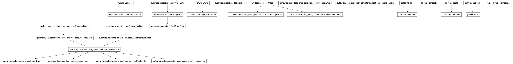
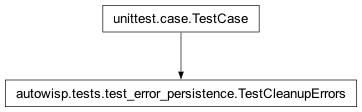
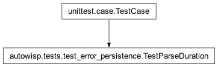

autowisp.tests.test_error_persistence module
Class Inheritance Diagram

Unit tests for error persistence (row + JSON sidecar).
These need a real (throwaway) project database, created once per class in a temporary directory.
- class autowisp.tests.test_error_persistence.TestCleanupErrors(methodName='runTest')[source]
Bases:
TestCase
wisp-cleanup-errors prunes aged rows, orphan files, dangling rows.
Uses a fresh project per test, since cleanup mutates global DB state.
- test_aged_rows_and_sidecars_removed()[source]
An old error and its sidecar are deleted; a recent one is kept.
- test_dangling_row_reference_cleared()[source]
A row whose sidecar vanished keeps the row but clears the path.
- class autowisp.tests.test_error_persistence.TestParseDuration(methodName='runTest')[source]
Bases:
TestCase
parse_duration accepts compact durations and rejects junk.
- class autowisp.tests.test_error_persistence.TestPersistError(methodName='runTest')[source]
Bases:
_PersistenceTestCasepersist_error writes the queryable row and the detail sidecar.
A related file matching a known image/master sets the FK.
- test_delete_missing_error_is_noop()[source]
Deleting a non-existent error returns False, does not raise.
- test_delete_removes_row_and_sidecar()[source]
delete_error removes both the row and its sidecar file.
- test_large_payload_is_gzipped()[source]
A payload over the threshold is written as .json.gz and reloads.
- test_missing_sidecar_degrades_to_none()[source]
Reading an error whose sidecar is gone returns None, no crash.
- test_row_and_sidecar_are_complementary()[source]
Inline fields on the row; the heavy remainder in the sidecar.
- test_sidecar_failure_leaves_valid_row()[source]
A sidecar-write failure still leaves a row, sidecar_path NULL.
- test_worker_crashed_persists_step_name()[source]
A synthesised worker-death error lands its step on the row.
End-to-end regression for the crash-report “no matching logs found” gap: a
WorkerCrashedErroris synthesised by the parent (so it is not a per-stageStepErrorsubclass), but it must still persiststep_nameinto the queryable column – that is what crash-report log-collection resolves the run/step logs from. It is astep-component error because the failure is in the algorithm running inside the step.
- class autowisp.tests.test_error_persistence.TestRunPipelineHandler(methodName='runTest')[source]
Bases:
_PersistenceTestCaserun_pipeline.main records an escaping error and re-raises it.
- test_handler_persists_and_reraises()[source]
An AutoWISPError out of the run is persisted, then re-raised.
- test_handler_records_plain_exception()[source]
A non-AutoWISP exception is recorded; the original re-raises.
Mirrors a real failure: a bad config expression raises a plain NameError in the orchestration layer, outside any step’s capture boundary. The handler records it (wrapped as a PipelineError) but re-raises the original so its true traceback reaches the log.